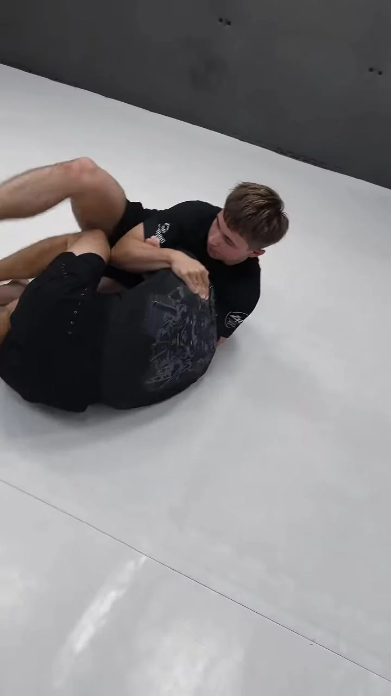

ZACZNIJ OD PODSTAW01 / POCZĄTKUJĄCYTWÓJ PIERWSZY
TWÓJ PIERWSZY
KROK.
Nie musisz znać technik ani mieć sportowej przeszłości — BJJ to sport walki, w którym technika wygrywa z siłą. Na No-Gi poznasz podstawowe pozycje, chwyty i pracę z partnerem — bez kimona.
Pon. 18:30 · Śr. 18:00
Zobacz zajęcia dla początkujących ↗